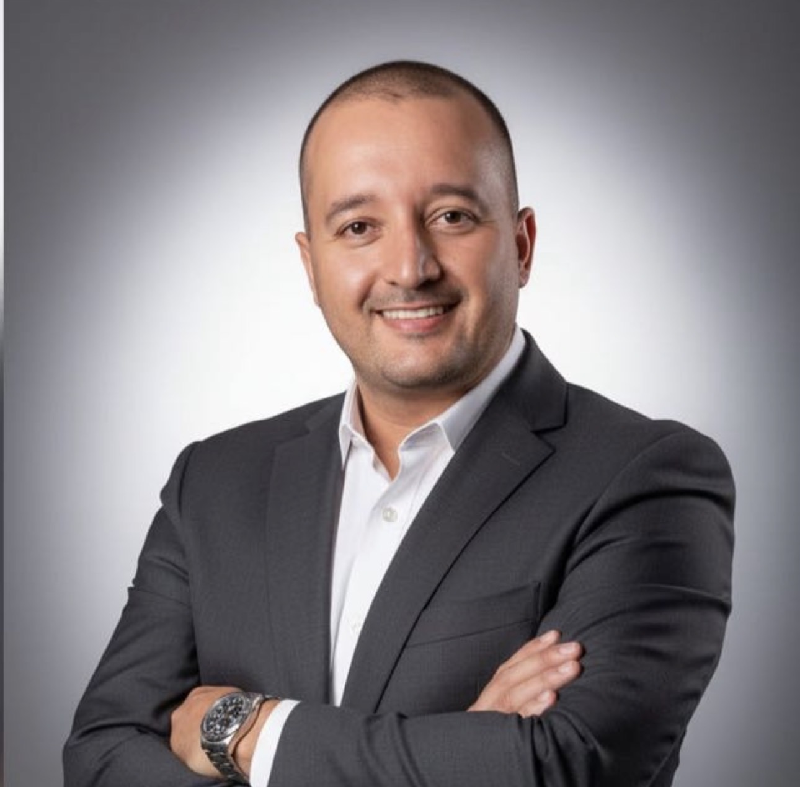

Portafolio de Servicios
Innovación Educativa con Sentido Humano. No vendo tecnología — transformo instituciones educativas a través de ella.

01 — Servicios
Cuatro líneas de servicio diseñadas para transformar la realidad educativa de tu institución.
02 — Metodología
Un proceso probado para transformar tu realidad educativa de manera sistemática y sostenible.
03 — Voces Reales
04 — Paquetes
Tres niveles de compromiso diseñados para diferentes necesidades y alcances.
05 — Diferencial
06 — Trayectoria
El recorrido profesional que respalda cada uno de mis servicios.
07 — Conectemos
Escríbeme directamente por WhatsApp o correo. Respondo en menos de 24 horas.